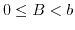
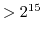

Next: exit (3219)
Up: Software Interrupts
Previous: core (4094)
Contents
The parameter, ``sp'', of this procedure
defines the address of a word which
should be included in the user mode
stack.
- 4141:
- If the stack already extends far
enough, simply return with a zero
value.
Note that this test relies on the
idiosyncrasies of 2's complement
arithmetic, and if both
|sp| 
and
|u.u_size |
the decision to extend the stack
may be taken wrongly at this
juncture;
- 4143:
- Calculate the stack size increment needed to include the new
stack point plus a 20*32 word
margin;
- 4144:
- Check that this value is in fact
positive (i.e. we are not dealing
with a failure of the test on
line 4141.);
- 4146:
- Check that the new stack size
does not conflict with the memory
segmentation constraints (``estabur'' sets ``u.u_error'' if they do)
and reset the segmentation register prototypes;
- 4148:
- Get a new, enlarged data area,
copy the stack segments (32 words
at a time) into the high end of
the new data area, and clear the
segments which now become the
stack expansion;
- 4156:
- Update the stack size,
``u.u_ssize'' and return a ``successful'' result.
Next: exit (3219)
Up: Software Interrupts
Previous: core (4094)
Contents
2010-05-03